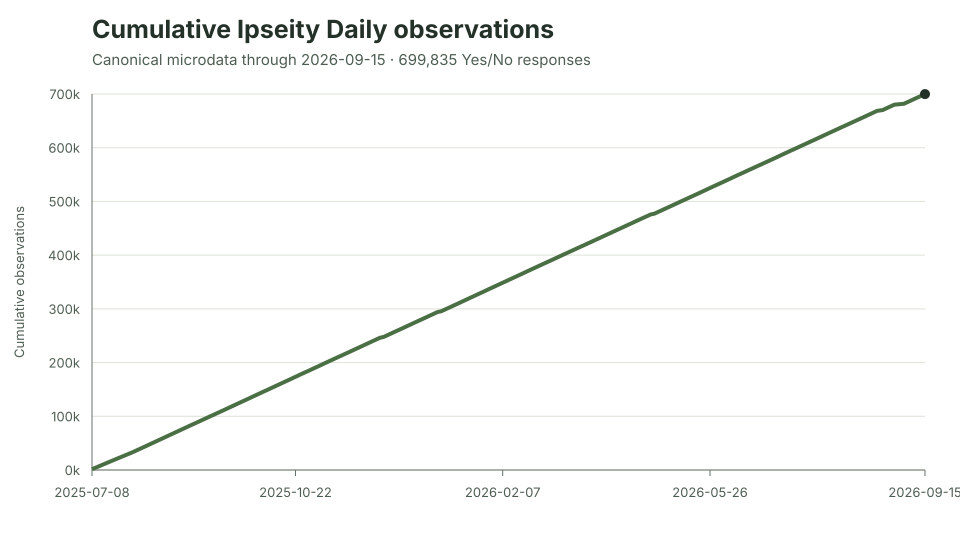

Ipseity Daily Pulse · 2026-09-16
Nearly 700,000 answers about identity
Nearly 700,000 answers show data scale, not 700,000 people or a population trend.
By Ceetown · 3 minute read
How do American adults describe themselves? Ipseity Daily asks a
fresh survey sample whether signifiers such as dad,
trusting, or Cleveland Browns fan describe
them today. The canonical data through September 15, 2026 contain
699,835 Yes/No answers across 707 signifiers and 4,979 hashed
respondents.
That is response volume—not 699,835 people, and not by itself a population trend. The openly downloadable data make both the scale and the caveats inspectable.
Source: Ipseity Daily download page

Evidence note
The values come from the canonical microdata retrieved at
2026-09-16T20:47:07Z. Validation and the exact file hash are recorded in
CURRENT-FINDINGS.md and outputs/current-summary.json.
Snapshot note: This dated entry and figure are preserved from the stated check. Links to the cumulative report and aggregate tables may show newer data.